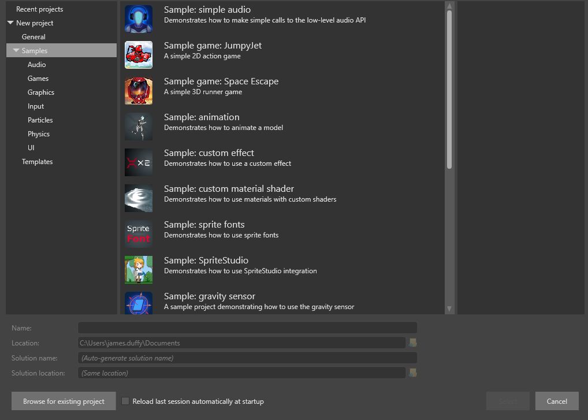

Создание проекта
Начинающий
На этой странице объясняется, как:
- создать новый пустой проект
- создать проект на основе шаблона или образца
Шаблоны — это проекты, содержащие только необходимые элементы для начала работы над игрой.
Образцы — это полноценные игры, на которых вы можете учиться или основывать новую игру.
Создание пустого проекта
Пустой проект — это проект, который содержит только самый минимум содержимого для создания игры: простую сцену со светом, камерой и скриптом для перемещения камеры, а также предварительно настроенный конвейер рендеринга. Это хорошо, когда вы хотите начать игру с нуля без элементов, которые вам не нужны.
Чтобы создать пустой проект:
В Stride Launcher нажмите Start, чтобы запустить Game Studio.
Откроется диалоговое окно Новый/существующий проект (New/open project).

Вы также можете открыть новый проект в Game Studio из File > New.
Выберите New Game.
В полях Name and Location укажите имя проекта и папку для его сохранения.
Нажмите Select.
Откроется диалоговое окно Create a new game.

В поле Namespace укажите пространство имен, которое вы хотите использовать. Если вы не знаете, каким должно быть ваше пространство имен, оставьте его по умолчанию.
В разделе Platforms выберите платформы, которые должна поддерживать ваша игра.
Note
> Для поддержки iOS и Android вам необходимо установить Xamarin (бесплатно, если у вас есть Visual Studio).
Если в вашей системе отсутствуют предварительно установленные компоненты для любой из выбранных вами платформ, Stride выведет предупреждение.
В разделе Asset Packs вы можете выбрать дополнительные ресурсы для включения в свой проект. К ним относятся такие ресурсы, как анимация и материалы. С пакетами ресурсов интересно играть, когда вы учитесь использовать Stride, но они не являются необходимыми.
В разделе Rendering выберите нужные параметры.
Graphics API: Графические функции, которые вы можете использовать в своем проекте, зависят от выбранного вами API. Для расширенных графических функций выберите последнюю версию графических API.
[!Предупреждение] Некоторые видеокарты не поддерживают новейшие API. Для некоторых мобильных устройств доступны только Direct3D 9.3 / Open GL ES 2.0 и Direct3D 10.0 / Open GL ES 3.0.
High or Low Dynamic Range (HDR / LDR): Это определяет, как вычисляется цвет в вашем проекте. В режиме LDR цвета находятся в диапазоне от 0 до 1. В режиме HDR цвета могут принимать любое значение с плавающей точкой. HDR обеспечивает более продвинутый и реалистичный рендеринг, но требует большей вычислительной мощности и профиля Direct3D 10.0 / Open GL ES 3.0 или более поздней версии.
В разделе Orientation выберите ориентацию для вашего проекта. Для игр на ПК используйте альбомную ориентацию. Портретную ориентацию обычно следует использовать только для мобильных игр.
Нажмите ОК.
Stride создаст проект и откроет его в Game Studio. Для получения дополнительной информации см. Game Studio.
Создание проекта по образцу или шаблону
Stride включает в себя несколько примеров проектов, демонстрирующих каждую часть движка (2D, 3D, спрайты, шрифты, пользовательский интерфейс, аудио, ввод и т. д.). Он также включает в себя шаблоны игр, которые помогут вам создать собственную игру.
Чтобы создать проект по образцу или шаблону:
Откройте диалоговое окно New Project.
Слева перейдите в New project > Samples..
Выберите Select the sample образец из которого вы хотите создать проект.

Нажмите Select.
Откроется окно выбора платформ Select Platforms.
Выберите платформы, которые должна поддерживать ваша игра, и нажмите OK.
Stride создаст проект и откроет его в Game Studio.